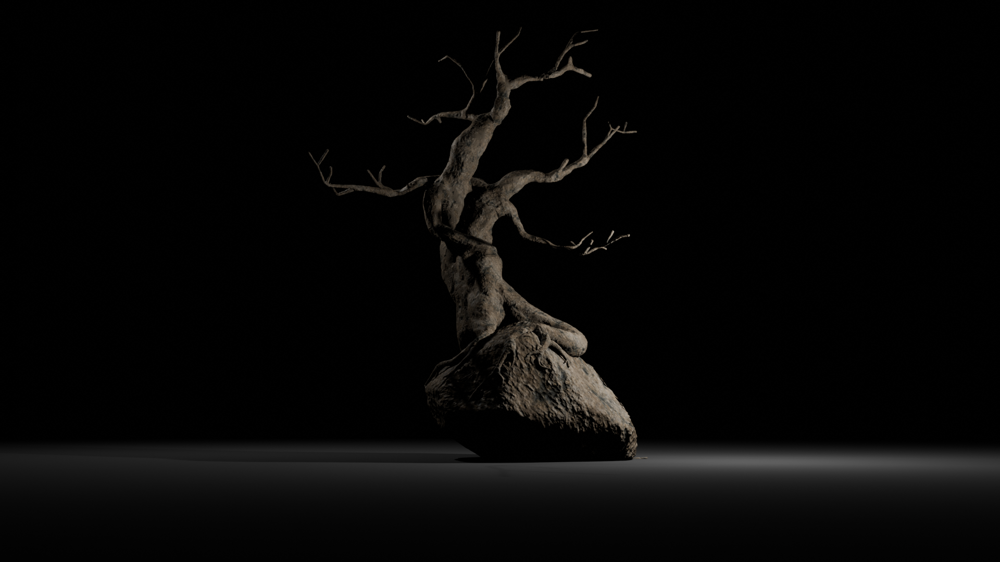
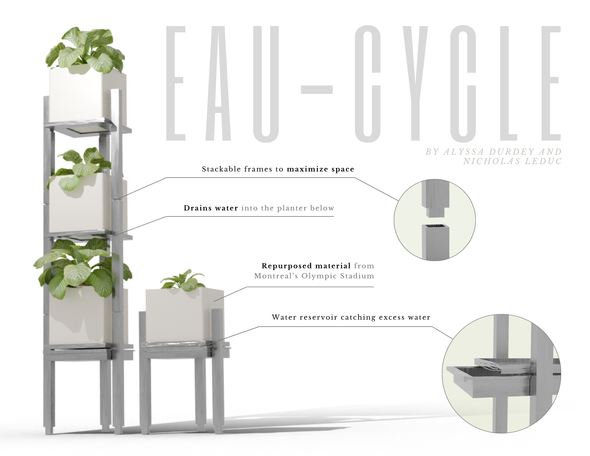
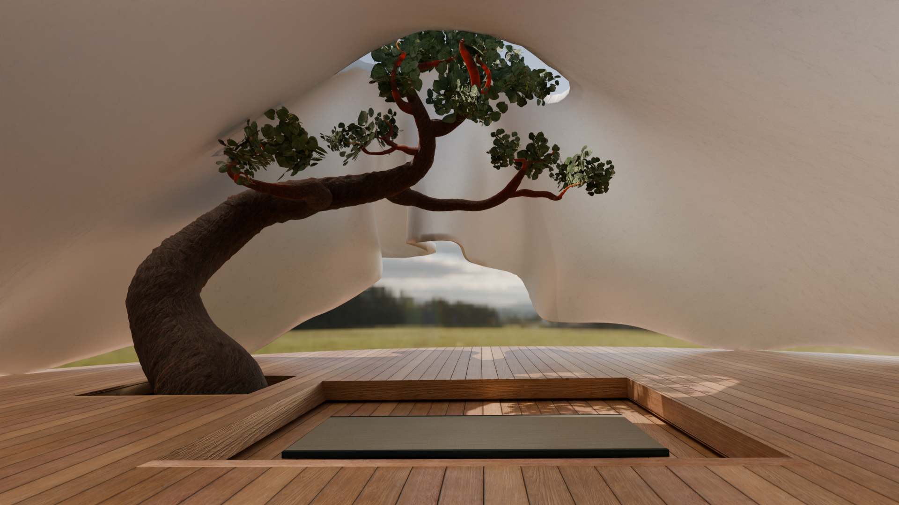
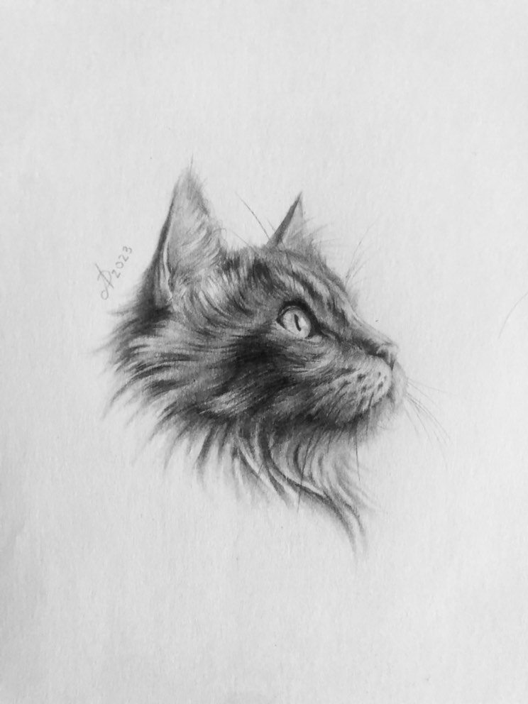
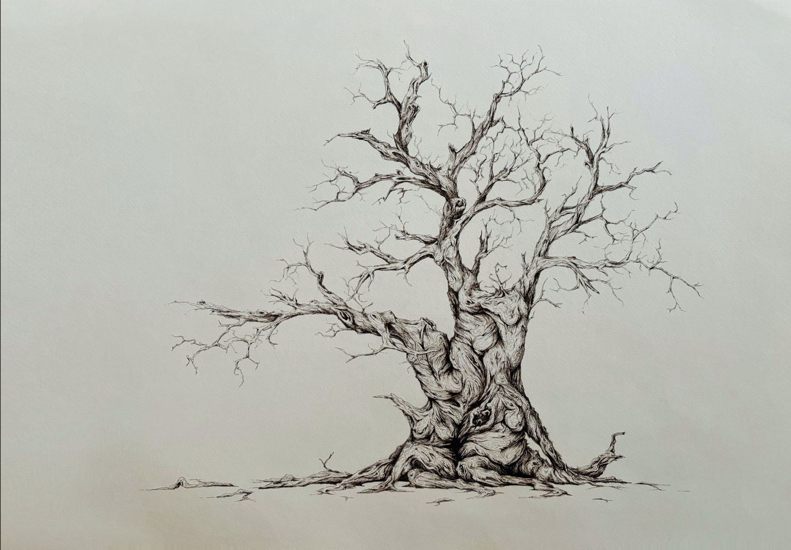

Selected Work
3D Model

3D Model

3D Model

Traditional Art

Traditional Art

UX/UI
Experience
Education
2023 — 2026
Bachelor of Computation Arts
Concordia University
Focus on 3D modeling, UX/UI design, and sustainable design practices.
Experience
2022
Editor Intern
NuAge Films
Created 3D assets for client NFT projects and edited the behind-the-scenes footage for artists.
Skills
Software
Blender, Figma, Adobe Premiere, VS Code
Languages
HTML, CSS, JavaScript
Let's Create Together
I'm currently seeking opportunities in 3D design and UX/UI. Whether you have a project in mind or just want to connect, I'd love to hear from you.
Tools & Methods
Additional Images